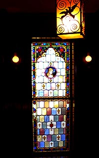

|
■2005/01/29/(Sat)20:37
京都は…
|

さてさて…京都観光してきました…
が、当初予定の広隆寺、鈴虫寺はあきらめました…
とゆーのも、ことごとく道に迷ったからです…
比較的方向感覚が良いと思っているのだが、京都の道はわかりにくい。
格子状になってるから、ぜったい迷わない…って聞いてたのになぁ…
迷いポイント
１）京都内で配布している地図に縮尺が書いてないことが多い
……近いと思いきや、意外と遠かったりする。
２）京都駅前のバス乗り場でバス路線図を見て
「ふむふむ…５番バスだな！」と思って停留所を見ると『A1』『B1』…と
まったく関係性がわからない停留所が並んでいる…
ホントーにこれには参った。
３）道を聞いても結構アバウト
３人に聞いたのだけど…「ここ上って右」「山のほう」…とこれまた判らなかった…ただたんに人の選択ミスだったと思うのだが…。
そんなわけで、六波羅蜜寺、晴明神社を見て、ギブ。
まーなにはともあれ空也上人像は良かった〜♪表情が…「あーでちゃったー」って顔なんだよねぇ…。好き好んで「南無阿弥陀仏」を出してるんじゃなくて、思わぬときに差し歯が抜けたよーな、そーんな表情に見えるんだけど。白目剥いてるし。。。
晴明神社はねー。これまたある意味面白かった。
昨今の晴明ブームゆえか俗エッセンスがあちらこちらに…
で…もう市内観光はしんどいことが判明し、急遽「大山崎山荘美術館」に行くことに…
結構ここが良かった。
建物が、大正ロマン〜な洋館と、現代建築「安藤忠雄氏」のコラボレーション。
京都ミニ観光は近々「旅」にUPいたします。
|
| |